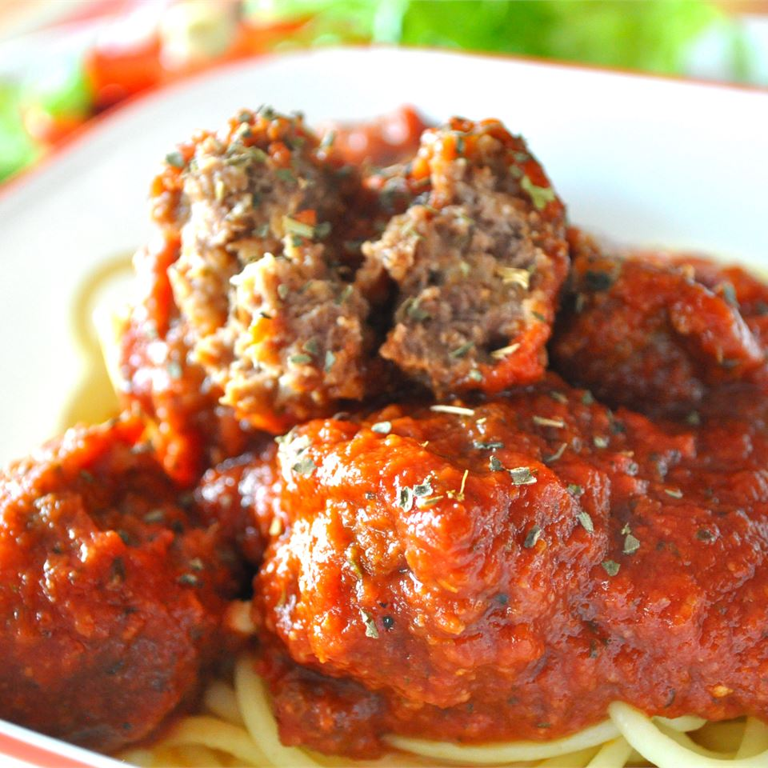

Meatball

Description
These meatballs are a compilation of many, many meatball recipes to finally achieve what I was looking for... Meatball Nirvana! Cover with your favorite red sauce and serve with pasta or in crusty garlic bread rolls.
Ingredients
- 1 pound extra lean ground beef
- ½ teaspoon sea salt
- 1 small onion, diced
- ½ teaspoon garlic salt
- 1 ½ teaspoons Italian seasoning
- ¾ teaspoon dried oregano
- ¾ teaspoon crushed red pepper flakes
- 1 dash hot pepper sauce (such as Frank's RedHot®), or to taste
- 1 ½ tablespoons Worcestershire sauce
- ⅓ cup skim milk
- ¼ cup grated Parmesan cheese
- ½ cup seasoned bread crumbs
Steps
- Preheat an oven to 400 degrees F (200 degrees C).
- Place the beef into a mixing bowl, and season with salt, onion, garlic salt, Italian seasoning, oregano, red pepper flakes, hot pepper sauce, and Worcestershire sauce; mix well. Add the milk, Parmesan cheese, and bread crumbs. Mix until evenly blended, then form into 1 1/2-inch meatballs, and place onto a baking sheet.
- Bake in the preheated oven until no longer pink in the center, 20 to 25 minutes.